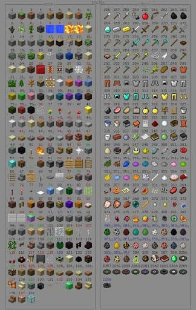

предмети

-
Материалы — это предметы, которые используются исключительно для крафта (создания других
предметов
или блоков).
-
Еда требуется для уменьшения шкалы голода. Пищу можно добыть, охотясь на свиней, коров, кур и
зомби,
занимаясь рыбалкой, находя грибы и делая из них тушёные грибы, выращивая пшеницу и готовя из неё
хлеб, выращивая свеклу, морковь и картофель, торгуя с деревенскими жителями и так далее. Также
пищу
можно найти в сундуках (в сокровищницах). Ещё можно создать несколько видов еды, такие, как торт
или
тыквенный пирог.
-
Инструменты — предметы, используемые игроком для взаимодействия с окружающей средой. Инструменты
в
основном используются для удаления блоков с большей скоростью, чем это сделают руки игрока, и
для
того, чтобы извлекать сырьё из некоторых блоков. Определённые инструменты также могут быть
использованы для разведения огня, ловли рыбы, переноса жидкостей или состригания шерсти с овец,
также к инструментам относятся часы, компас, карта.
-
Оружие увеличивает урон, наносимый игроком мобам или другим игрокам.
-
Броня защищает игрока от урона, кроме удушения (например, упавшим сверху блоком песка или
наковальней), горения (в огне или лаве), отравления, утопления, иссушения и прямого попадания
молний
(кроме должным образом зачарованной брони). Полный комплект брони включает шлем, нагрудник,
поножи и
ботинки.
-
Транспорт — это предметы, которые помогают игроку путешествовать в игровом мире как по земле и
по
воде, так даже по воздуху.
-
Декорации — тип предметов, которые не имеют никакого практического применения и служат для
украшения
и создания эстетики, например, картины или стойка для брони.
-
Семена нужны для посадки любых видов культур. Некоторые семена довольно сложно найти, например,
картофель и морковь (они являются семенами для самих себя) возможно только найти в деревнях или
получить в качестве дропа из зомби.
-
Красители — материалы, которые позволяют окрашивать овец, шерсть, стекло, терракоту, ошейники
прирученных волков, кожаную броню и звёздочки.
-
Зелья — предметы, которые накладывают положительные или отрицательные эффекты игрокам и мобам.
Зелья
разделяются на три вида: зелья, которые можно пить, взрывающиеся и оседающие зелья.